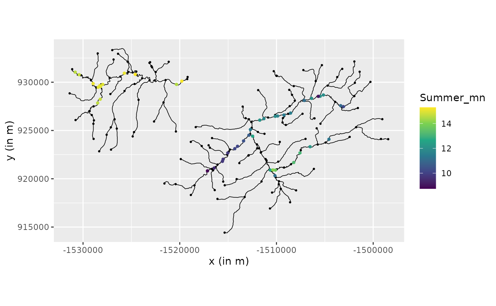

An example with a river graph model
David Bolin, Alexandre B. Simas, and Jonas Wallin
Created: 2024-08-08. Last modified: 2024-08-27.
Source:vignettes/river_example.Rmd
river_example.RmdIntroduction
In this vignette we explore how to build a directional graph model on
a river network. The data is imported from the package
SSN2.
Setting up the data
Here we take the data as is described in the Vignette
of SSN2. We will use the geometry object
from the SSN object to build the metricGraph
object. We also load the observations and the relevant covariates. We
assume that in the geometry object the lines are so that
they go downwards along the river.
library(MetricGraph)
library(SSN2)
copy_lsn_to_temp()
path <- file.path(tempdir(), "MiddleFork04.ssn")
mf04p <- ssn_import(
path = path,
predpts = c("pred1km", "CapeHorn"),
overwrite = TRUE
)To create the graph, we simply pass the SSN object as
edges. This will automatically extract the correct coordinate reference
system (CRS). We have found that, typically, SSN objects do
not require merges.
graph <- metric_graph$new(mf04p)Observe that this already added, by default, the observations and
edge weights contained in the SSN object:
graph$get_data()## # A tibble: 45 × 31
## rid pid STREAMNAME COMID AREAWTMAP SLOPE ELEV_DEM Source Summer_mn
## <int> <int> <chr> <int> <dbl> <dbl> <int> <chr> <dbl>
## 1 1 3 Bear Valley 23519365 1001. 0.00274 1958 RMRS_M… 14.6
## 2 1 2 Bear Valley 23519365 1001. 0.00274 1952 RMRS_M… 14.7
## 3 1 1 Bear Valley 23519365 1001. 0.00274 1947 RMRS_M… 14.9
## 4 5 5 Bear Valley 23519297 1007. 0.00568 1932 RMRS_M… 14.5
## 5 5 4 Bear Valley 23519297 1007. 0.00568 1923 RMRS_M… 15.2
## 6 10 6 Bear Valley 23519307 1009. 0.00042 1940 RMRS_M… 15.3
## 7 13 7 Bear Valley 23519313 1010. 0 1940 RMRS_M… 15.1
## 8 15 8 Bear Valley 23519317 1013. 0.00297 1945 RMRS_M… 14.9
## 9 17 10 Elk 23519321 1025. 0 1950 RMRS_M… 15.0
## 10 17 9 Elk 23519321 1025. 0 1948 RMRS_M… 15.0
## # ℹ 35 more rows
## # ℹ 22 more variables: MaxOver20 <dbl>, C16 <dbl>, C20 <dbl>, C24 <dbl>,
## # FlowCMS <dbl>, AirMEANc <dbl>, AirMWMTc <dbl>, rcaAreaKm2 <dbl>,
## # h2oAreaKm2 <dbl>, ratio <dbl>, snapdist <dbl>, upDist <dbl>, afvArea <dbl>,
## # locID <int>, netID <dbl>, netgeom <chr>, .distance_to_graph <dbl>,
## # .edge_number <dbl>, .distance_on_edge <dbl>, .group <dbl>, .coord_x <dbl>,
## # .coord_y <dbl>and
graph$get_edge_weights()## # A tibble: 163 × 17
## rid COMID GNIS_NAME REACHCODE FTYPE FCODE AREAWTMAP SLOPE rcaAreaKm2
## <int> <int> <chr> <chr> <chr> <int> <dbl> <dbl> <dbl>
## 1 1 23519365 Bear Valle… 17060205… Stre… 46006 1001. 0.00274 4.65
## 2 2 23519367 Bear Valle… 17060205… Stre… 46006 1002. 0.0071 0.839
## 3 3 23519369 Bear Valle… 17060205… Stre… 46006 1003. 0.0036 3.91
## 4 4 23519295 Bear Valle… 17060205… Stre… 46006 1010. 0.0147 0.0495
## 5 5 23519297 Bear Valle… 17060205… Stre… 46006 1007. 0.00568 5.02
## 6 6 23519299 Bear Valle… 17060205… Stre… 46006 1003. 0.00104 0.992
## 7 7 23519301 Bear Valle… 17060205… Stre… 46006 1006. 0.00271 1.46
## 8 8 23519303 Bear Valle… 17060205… Stre… 46006 1009. 0.00055 0.597
## 9 9 23519305 Bear Valle… 17060205… Stre… 46006 1009. 0.00026 1.32
## 10 10 23519307 Bear Valle… 17060205… Stre… 46006 1009. 0.00042 0.865
## # ℹ 153 more rows
## # ℹ 8 more variables: h2oAreaKm2 <dbl>, Length <dbl>, upDist <dbl>,
## # areaPI <dbl>, afvArea <dbl>, netID <dbl>, netgeom <chr>, .weights <dbl>We can now visualize the river and the data
graph$plot(data = "Summer_mn", vertex_size = 0.5)
# Non directional models We start with fitting the non directional
models. First for alpha=1:
#fitting model with different smoothness
model.wm1 <- graph_lme(Summer_mn ~ ELEV_DEM + SLOPE + as.factor(netID),
graph = graph, model = 'wm1')and then for alpha=2:
model.wm2 <- graph_lme(Summer_mn ~ ELEV_DEM + SLOPE + as.factor(netID),
graph = graph, model = 'wm2')We also create the cross validation results to see how the models perform. Here we see that setting , i.e. one time differential, has a much worse performance compared to , i.e. continuous but non-differential.
cross.wm1 <-posterior_crossvalidation(model.wm1)
cross.wm2 <-posterior_crossvalidation(model.wm2)
cross.scores <- rbind(cross.wm1$scores,cross.wm2$scores)
print(cross.scores)## # A tibble: 2 × 5
## logscore crps scrps mae rmse
## <dbl> <dbl> <dbl> <dbl> <dbl>
## 1 0.787 0.277 0.717 0.358 0.503
## 2 0.814 0.287 0.737 0.375 0.517Directional models
We now start with fitting various directional model. We start with
having the “boundary condition” that at an edge the sum of the downward
vertices should equal the upward vertices. That is if we have three
edges
connected so that
merge into
we have at the vertex connecting them
This is the default option in
metricGraph and is created by:
res.wm1.dir <- graph_lme(Summer_mn ~ ELEV_DEM +
SLOPE + as.factor(netID),
graph = graph, model = 'wmd1')Here one can see a big improvement by adding using the directional model over the non directional.
cross.wm1.dir <-posterior_crossvalidation(res.wm1.dir)
cross.scores <- rbind(cross.scores,cross.wm1.dir$scores)
print(cross.scores)## # A tibble: 3 × 5
## logscore crps scrps mae rmse
## <dbl> <dbl> <dbl> <dbl> <dbl>
## 1 0.787 0.277 0.717 0.358 0.503
## 2 0.814 0.287 0.737 0.375 0.517
## 3 0.382 0.214 0.538 0.296 0.399We could use other constraints. For instance in .. the authors used
constraint not so the sum is equal but rather the variance of the in is
constant which is obtained by
here the weights are set by the edge
weight h2oAreaKm2. To make this work in the metricgraph
package one uses the following line
graph$set_edge_weights(directional_weights = 'h2oAreaKm2')
graph$setDirectionalWeightFunction(f_in = function(x){sqrt(x/sum(x))})
res.wm1.dir2 <- graph_lme(Summer_mn ~ ELEV_DEM + SLOPE + as.factor(netID),
graph = graph, model = 'wmd1')Here we see a slight dip in performance but still much better than the symmetric version.
cross.wm1.dir2 <-posterior_crossvalidation(res.wm1.dir2)
cross.scores <- rbind(cross.scores,cross.wm1.dir2$scores)
print(cross.scores)## # A tibble: 4 × 5
## logscore crps scrps mae rmse
## <dbl> <dbl> <dbl> <dbl> <dbl>
## 1 0.787 0.277 0.717 0.358 0.503
## 2 0.814 0.287 0.737 0.375 0.517
## 3 0.382 0.214 0.538 0.296 0.399
## 4 0.503 0.228 0.597 0.318 0.409